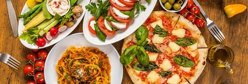

La cuisine italienne se caractérise par la variété des produits utilisés en Italie, ainsi que par une grande diversité régionale. Elle repose essentiellement sur le régime méditerranéen fait de produits frais, mais est aussi renommée pour sa production d'huile d'olive, de fromages, de charcuterie, de vins, de fruits et de desserts qui font partie des plus de 5 300 produits traditionnels régionaux.
Recette simple: Recette de spritz
Recette moyenne: Recette de pâtes à la carbonara
Recette difficile: Recette de tiramisu
Selon la culture populaire ce serait Marco Polo qui aurait rapporté au XIIIe siècle les pâtes de Chine. Ce qui est en réalité infondée1. En réalité, les Grecs et les Romains connaissaient déjà des pâtes fraîches du type lasagnes (laganon en grec, laganæ en latin). On trouve, près de Rome, une tombe du IIIe siècle av. J.-C., ornée d'un bas-relief représentant un rouleau à pâte et un coupe-pâtes. Par ailleurs, le terme romain nodus (« nœud ») désignait une de ces variétés de pâtes.
Les pâtes sèches de la famille des vermicelles sont importées de Palestine, entre le IIIe et IVe siècles. Elles sont fabriquées dans le monde arabe, depuis au moins le IXe siècle, sous le nom d’itriyya. On trouve des recettes d’itriyya ou de fidaws dans les livres de cuisine de Bagdad, à partir du Xe siècle et dans les livres de cuisine d'Al-Andalus, au XIIIe siècle. En Sicile, au XIIe siècle, le géographe arabe Al Idrissi signale un commerce important de pâtes à Trabia (à l'est de Palerme)2.
Comme tous les pays de la Méditerranée, la cuisine italienne est héritière de la cuisine romaine antique (par exemple, son goût pour les poissons salés — antipasti aux anchois, bottarga, sardella de Calabre — ou bien la colatura di alici, directement issue du garum romain), mais aussi de la cuisine arabe, qui y a apporté les pâtes, l'aubergine, la confiserie. Les produits originaires d'Amérique (tomate, poivron, piment, pomme de terre) ont révolutionné la cuisine italienne (comme les cuisines provençale ou la espagnole)3.
La pizza, autre plat symbolique de la cuisine italienne sous sa forme actuelle avec de la tomate, n'existe que depuis 1700. Avant la pizza napolitaine, la pizza était un gâteau sucré ou salé, dont le nom est connu depuis 997. Au XVIe siècle, le cuisinier Bartolomeo Scappi en donne une recette4.
La pizza est devenue un des plats mondiaux les plus connus, citée souvent comme plat national autochtone par beaucoup d'Américains.
On a souvent dit que la cuisine italienne avait modifié la cuisine française grâce aux apports de Catherine ou Marie de Médicis. En fait, au XVIe siècle, les livres de recettes italiennes, comme Opera dell'arte del cucinare (« Ouvrage sur l'Art de cuisiner »), de Scappi, publié en 15704, présentent une cuisine encore très proche de la cuisine médiévale.